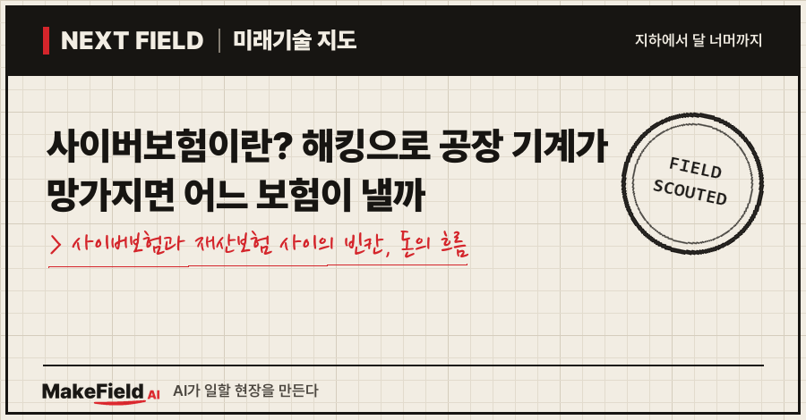
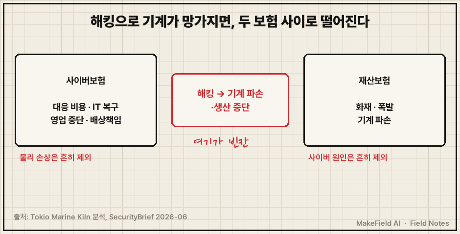
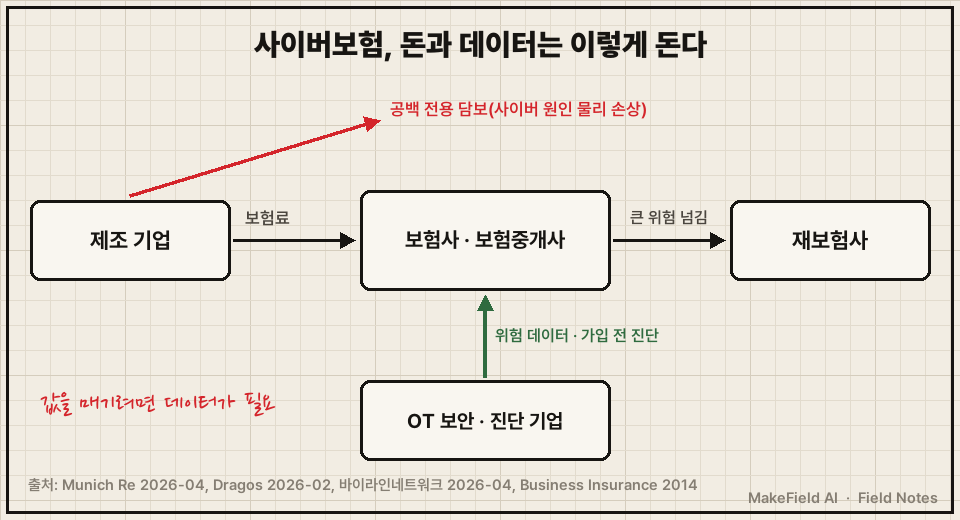
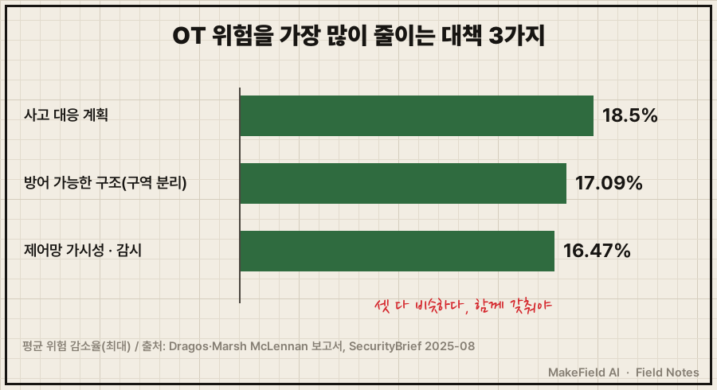

공장이 해킹을 당해 데이터만 잠기는 게 아니라 기계가 실제로 망가지면, 그 손해는 누가 물어 줄까요? 사이버보험일 것 같고, 화재·기계 사고를 보는 재산보험일 것 같기도 해요. 그런데 영국 로이즈 시장의 보험사가 2026년 6월 공개 경고한 내용은 "둘 다 안 낼 수 있다"였습니다.
한 줄 요약: 사이버보험은 흔히 물리 손상을 빼고 재산보험은 흔히 사이버 원인을 빼기 때문에, 해킹으로 공장 기계가 망가지거나 생산이 멈춘 손실은 두 보험 사이로 떨어질 수 있다(Tokio Marine Kiln, SecurityBrief 2026-06). 세계 사이버보험 시장은 2025년 약 150억 달러로 추정된다(Munich Re 2026-04).
이 글은 2026년 11월 기준 공개 자료로 사이버보험이 무엇인지, 공장에서 왜 '보험 공백'이 생기는지, 돈은 누가 내고 누가 받는지, 한국은 어디쯤 와 있는지를 차례로 풀어 봅니다.
1. 사이버보험이란 무엇인가요
사이버보험이란 해킹·랜섬웨어 같은 사이버 사고로 생긴 대응 비용, 전산 복구 비용, 영업 중단 손실, 고객에 대한 배상책임을 보상하는 보험이다. 한국에서도 손해보험사들이 중소기업용 상품을 팔고 있어요.
💡 랜섬웨어 — 회사 컴퓨터의 파일을 몰래 암호화해 못 쓰게 만든 뒤 '풀어 줄 테니 돈을 내라'고 요구하는 악성 프로그램. 디지털 인질극이다.
예를 들어 삼성화재 '삼성사이버종합보험'은 매출 1,000억 원 이하이면서 개인정보 보유 수가 300만 명 이하인 기업을 대상으로, 사이버 사고에 따른 재산손해(대응·IT 복구 비용), 기업휴지손해, 각종 배상책임손해를 보장한다고 소개됐어요(이투데이 2025-05).
💡 기업휴지손해 — 사고로 회사가 멈춘 동안 벌지 못한 이익. 가게가 불이 나서 한 달 문을 닫았다면, 그 한 달치 장사 손실이다.
문제는 이 보장 목록이 대부분 '전산' 쪽이라는 점이에요. 사무실 PC와 서버를 되살리는 비용은 들어 있지만, 해킹 때문에 공장 기계가 과열돼 부서졌다면 이야기가 달라집니다.
2. 해킹으로 공장 기계가 망가지면 왜 보험이 안 나올 수 있나요
두 보험이 서로 상대 영역을 빼놓고 있기 때문이다. 로이즈 시장에서 활동하는 도쿄해상 계열 보험사 Tokio Marine Kiln(TMK)의 분석을 전한 기사는 "사이버보험은 흔히 물리 손상을 제외하고, 재산보험은 흔히 사이버 관련 위험을 제외한다"고 정리했어요(SecurityBrief 2026-06).
💡 재산보험 — 화재·폭발·기계 고장 등으로 건물과 설비가 망가진 손해를 보상하는 보험. 공장이라면 대부분 들어 있다.
💡 면책 — 약관에서 '이런 원인이면 보상하지 않는다'고 정해 둔 조항.
💡 언더라이터 — 보험사에서 이 계약을 받을지, 보험료를 얼마로 할지 정하는 심사 담당자.
공장 기계를 직접 움직이는 제어 시스템을 OT라고 부르는데, 공격이 이 OT까지 닿으면 손해가 화면 밖으로 나옵니다. 그런데 그 손해의 원인은 '사이버'이고, 결과는 '물리 손상'이에요. 사이버보험은 결과가 물리 손상이라 빼고, 재산보험은 원인이 사이버라 빼는 구조가 될 수 있습니다.
💡 OT(운영기술) — 공장 기계·펌프·밸브처럼 물리 설비를 직접 움직이는 기술(PLC 같은 산업용 제어 컴퓨터와 제어망). 이메일·사무용 PC 쪽은 IT라고 부른다.

그림을 글로 옮기면, 왼쪽 사이버보험은 대응 비용·IT 복구·배상책임을 보고 '물리 손상'을 빼며, 오른쪽 재산보험은 화재·폭발·기계 파손을 보고 '사이버 원인'을 빼요. 그 사이, 즉 해킹이 원인이 된 기계 파손과 생산 중단이 빈칸으로 남을 수 있습니다. 기사는 이 위험을 적극적으로 보장하는 보험사가 "제한된 수"라고 전했어요(SecurityBrief 2026-06).
3. 왜 지금 이 공백이 커지나요
공격이 사무실 전산에서 공장 설비 쪽으로 넓어지고 있는데, 사이버 위험의 대부분은 아직 보험에 들어 있지 않기 때문이다. 세계 최대급 재보험사 Munich Re가 2026년 보고서에서 짚은 내용이에요.
💡 재보험 / Munich Re(뮌헨재보험) — 재보험은 '보험사가 드는 보험'. Munich Re는 이 분야 세계 최대급 회사다.
| 신호 | 내용 | 출처 |
|---|---|---|
| 가장 노출된 업종 | 정부·제조업·기술 기업 | Munich Re 2026-03 |
| 공격 대상 확장 | 공격 중개 시장이 OT·IoT 생태계로 대상을 넓히는 중 | Munich Re 2026-03 |
| 설비 규모 | 2024년 세계에서 가동 중인 산업용 로봇 470만 대 이상(국제로봇연맹 집계 인용) | Munich Re 2026-03 |
| 보험 가입 | "사이버 위험의 대부분은 보험 가능한데도 아직 보험에 들어 있지 않다" | Munich Re 2026-03 |
| 지역 | 아시아·태평양은 세계 제조 생산의 절반 이상, 세계 사이버 사고의 약 1/3 | TMK, SecurityBrief 2026-06 |
| 공격 방식 | 침해 사고 중 시스템 침입형 공격 비중이 38%에서 약 80%로 증가 | TMK, SecurityBrief 2026-06 |
최악의 경우를 돈으로 계산한 자료도 있어요. 산업 제어 보안 기업 Dragos와 보험중개사 Marsh McLennan의 사이버위험센터가 함께 낸 '2025 OT 보안 재무위험 보고서'는, 250년에 한 번 꼴로 일어날 수 있는 심각한 사건이 나면 세계 OT 사이버 손실이 3,295억 달러에 이르고 그중 1,724억 달러가 기업휴지 손실이라고 추정했습니다. OT 관련 침해의 70%는 간접 재무 손실로 이어진다고도 적었어요(SecurityBrief 2025-08, 보고서 추정치).
4. 돈의 흐름 — 누가 내고, 누가 메우고, 누가 위험을 재나요
돈은 네 갈래로 흐른다. 기업이 보험료를 내고, 보험사는 위험 일부를 재보험사에 넘기며, 일부 보험사·중개사는 '공백 전용' 상품을 팔고, 보험사는 OT 위험을 돈으로 환산하는 데이터를 보안 기업에서 받는다.
💡 보험중개사 — 기업과 보험사를 이어 주고 보험 설계를 돕는 회사. Marsh가 세계 최대급이다.
💡 사이버 위험 정량화 — 해킹 위험을 '한 해 예상 손실 얼마'처럼 돈 단위로 바꾸는 계산. 보험료를 매기려면 이 숫자가 필요하다.
| 누가 → 누구에게 | 무엇으로 | 규모·내용(예시) | 출처 |
|---|---|---|---|
| 기업 → 보험사 | 사이버보험료 | 세계 시장 2025년 약 150억 달러, 2030년 약 280억 달러 전망(Munich Re 추정) | Munich Re 2026-04 |
| 기업 → 공백 전용 상품 | 사이버 원인 물리 손상 담보 | Marsh 'Cyber Gap'(2014 출시, 사이버 면책으로 재산보험이 거절한 화재·폭발·기계 고장 보상), Brit 확장 패키지 최대 1억 5,000만 달러 한도(2019), CFC 대기업용 물리 손상 추가 옵션(2025) | Business Insurance 2014·2019, Insurance Edge 2025-01 |
| 보안 기업 → 보험사·중개사 | OT 위험 데이터 | Dragos 위협 정보를 Axio 위험 정량화 모델에 연결, 운영 중단·기업휴지·사이버-물리 손상 담보 인수 지원 | Dragos 2026-02 |
| 보험사 → 보안 진단사 | 가입 전 진단 | KB손해보험–엔키화이트햇 협약(2026-04-23): 가입 전 보안 점검·위험 진단, 모의해킹 | 바이라인네트워크 2026-04 |

그림을 글로 정리하면, ① 제조 기업이 보험사·중개사에 보험료를 내고 ② 보험사는 큰 위험을 재보험사에 넘기며 ③ OT 보안 기업은 '어떤 대책이 위험을 얼마나 줄이는지' 데이터를 보험사 쪽에 공급하고 ④ 공백을 메우는 별도 담보가 그 사이에 팔리는 구조예요.
눈여겨볼 곳은 세 번째 줄입니다. Dragos는 2026년 2월 Axio와의 제휴를 발표하며 "사이버 보험사가 OT 언더라이팅 과제를 더 잘 이해하고 다루게 한다"고 밝혔어요(Dragos 2026-02). 보험사가 공장 설비 위험의 값을 매기려면, 이제 보안 기업의 데이터가 필요하다는 뜻입니다.
※ 위 기업명과 수치는 산업 구조를 설명하기 위한 예시입니다. 특정 종목의 매수·매도를 권하는 글이 아닙니다.
5. 보험사는 무엇을 보고 위험을 줄었다고 판단하나요
인증서 한 장보다 '어떤 대책이 실제로 켜져 있느냐'를 숫자로 보려는 흐름이다. Dragos·Marsh McLennan 보고서는 OT 위험을 가장 많이 줄이는 대책 3가지를 평균 위험 감소율로 제시했어요(SecurityBrief 2025-08).
| 대책 | 쉬운 말 | 평균 위험 감소율(최대) |
|---|---|---|
| 사고 대응 계획 | 해킹 났을 때 누가 무엇을 어떤 순서로 할지 미리 정한 문서와 훈련 | 18.5% |
| 방어 가능한 구조 | 사무실망과 공장 제어망을 구역으로 나눠, 한쪽이 뚫려도 번지지 않게 한 설계 | 17.09% |
| 제어망 가시성·감시 | 공장 제어망에 무엇이 연결돼 있고 어떤 통신이 오가는지 계속 지켜보는 것 | 16.47% |

그림을 글로 옮기면, 세 대책의 위험 감소율은 18.5%·17.09%·16.47%로 서로 비슷해요. 어느 하나만 하면 되는 게 아니라 세 가지를 함께 갖추는 쪽이 보험 심사에서 설명하기 쉽다는 뜻으로 읽을 수 있습니다. 보고서 측은 이 자료가 "보험사와 OT 운영자 모두에게 행동할 근거를 준다"고 밝혔어요(SecurityBrief 2025-08).
6. 한국 사이버보험은 어디쯤 와 있나요
한국 사이버보험 시장은 세계에 비해 아주 작고, 공장 설비 손상을 겨냥한 담보는 공개 보도에서 찾기 어렵다. 대신 '진단 + 보험'을 묶는 움직임이 막 시작됐어요.
- 규모: 2022년 국내 보험사가 거둔 사이버종합보험 보험료는 약 185억 원으로, 세계 사이버보험 시장(약 13조 6,000억 원)의 0.1% 수준이에요(이투데이 2025-05).
- 침투율: 국내 사이버보험 침투율은 0.0002%로 필리핀(0.0008%)·태국(0.0011%)·아시아·태평양 평균(0.0025%)보다 낮아요(매일신문 2025-06).
💡 침투율 — 경제 규모에 비해 그 보험에 쓰는 돈이 얼마나 되는지 보여 주는 비율. 낮을수록 '아직 아무도 안 든다'는 뜻이다.
- 가입이 적은 이유: 의무보험 가입 대신 준비금 적립 방식이 인정돼 실제 가입 유인이 낮다는 분석이 보험연구원 보고서를 인용해 소개됐어요(더팩트 2025-06).
💡 준비금 적립 — 보험에 드는 대신 회사가 사고 대비용 돈을 따로 쌓아 두는 방식으로 의무를 채우는 것.
- 사고는 늘고 있다: 한국인터넷진흥원(KISA)에 신고된 침해사고는 2024년 1,887건으로 전년보다 47.8% 늘었어요(더팩트 2025-06).
- 상품: 삼성화재와 현대해상이 매출 1,000억 원 이하 중소기업용 사이버보험을 내놨어요(이투데이 2025-05).
- 진단 결합: KB손해보험은 모의해킹 전문 기업 엔키화이트햇과 2026년 4월 23일 협약을 맺고, 보험 가입 전 고객 보안 점검·위험 진단, 공격자 관점의 모의해킹, 보안 컨설팅을 함께 하기로 했어요(바이라인네트워크 2026-04).
💡 모의해킹 — 허락을 받고 공격자처럼 시스템을 뚫어 보며 약점을 찾는 점검.
7. 언제 자리 잡나요, 한계는 무엇인가요
공백 전용 상품은 해외에 10년 넘게 있었지만, 아직 '파는 곳이 적고 사는 곳도 적은' 단계다. 성장 신호와 반대 근거가 함께 있어요.
- 세계 성장은 식었다: Munich Re는 가파른 상승 뒤 최근 3년간 사이버 보험료 성장이 둔화됐다고 밝혔어요(Munich Re 2026-04).
- 공급이 좁다: 사이버 원인 물리 손상과 그에 따른 기업휴지를 적극 보장하는 보험사는 제한된 수예요(SecurityBrief 2026-06). Marsh의 공백 담보는 2014년에 나왔지만(Business Insurance 2014), 12년이 지난 지금도 TMK가 '공백'을 경고하고 있습니다.
- 한국은 의무가 아니다: 준비금으로 대신할 수 있어 수요가 쉽게 늘지 않아요(더팩트 2025-06). 이 글에서 확인한 국내 상품 설명에는 공장 기계의 물리 손상 담보가 따로 나오지 않았습니다(이투데이 2025-05 기준).
- 손실 추정은 시나리오다: 3,295억 달러는 250년에 한 번 꼴인 극단 사건을 가정한 모델 추정치예요(SecurityBrief 2025-08). 실제 연간 손실과 혼동하면 안 됩니다.
반대로 보면 신호도 분명해요. 보험사가 OT 보안 기업의 데이터를 받아 사이버-물리 손상 담보를 인수하려는 제휴(Dragos 2026-02), 국내 보험사의 '가입 전 진단' 결합(바이라인네트워크 2026-04)은 보험이 공장 설비 위험의 값을 매기기 시작했다는 뜻입니다.
자주 묻는 질문
Q. 사이버보험과 재산보험은 무엇이 다른가요?
사이버보험은 해킹 대응 비용·전산 복구·영업 중단·배상책임처럼 '데이터와 전산' 쪽 손해를 보고, 재산보험은 화재·폭발·기계 파손처럼 '물건' 손해를 봐요. 해킹이 원인이 된 기계 파손은 두 보험이 서로 빼놓아 빈칸이 될 수 있습니다(SecurityBrief 2026-06).
Q. 공장이 랜섬웨어로 멈추면 사이버보험이 생산 중단 손실을 주나요?
상품에 기업휴지손해 담보가 있으면 보상 대상이 될 수 있어요. 국내 상품 중에도 기업휴지손해를 보장한다고 밝힌 예가 있습니다(이투데이 2025-05). 다만 기계가 물리적으로 망가진 손해는 약관마다 달라 따로 확인해야 해요.
Q. 한국 사이버보험 시장은 얼마나 되나요?
2022년 사이버종합보험 보험료 기준 약 185억 원으로 세계 시장의 0.1% 수준이고(이투데이 2025-05), 침투율은 0.0002%예요(매일신문 2025-06).
오늘의 용어 정리
- 사이버보험 — 해킹·랜섬웨어 사고의 대응·복구 비용, 영업 중단 손실, 배상책임을 보상하는 보험
- 재산보험 — 화재·폭발·기계 고장으로 건물·설비가 망가진 손해를 보상하는 보험
- OT(운영기술) — 공장 기계·펌프·밸브 등 물리 설비를 직접 움직이는 제어 기술
- 기업휴지손해 — 사고로 회사가 멈춘 동안 벌지 못한 이익
- 면책 — 약관에서 보상하지 않는다고 정한 원인
- 언더라이터 — 보험 계약을 받을지, 보험료를 얼마로 할지 정하는 심사 담당자
- 재보험 — 보험사가 드는 보험
- 보험중개사 — 기업과 보험사를 이어 주고 보험 설계를 돕는 회사
- 사이버 위험 정량화 — 해킹 위험을 돈 단위 예상 손실로 바꾸는 계산
- 침투율 / 준비금 적립 — 경제 규모 대비 보험료 비중 / 보험 대신 사고 대비금을 쌓는 방식
- 모의해킹 — 허락받고 공격자처럼 뚫어 보는 점검
지난 Next Field 글에서는 육상 연어 양식장에서 보험사가 먼저 위험평가를 산 이야기를 따라갔어요. 오늘은 같은 흐름이 공장 해킹에서도 보였습니다. 여러분 회사의 보험 약관에는 '사이버 원인'이라는 단어가 어떻게 적혀 있을까요?
출처
[1] SecurityBrief(2026-06) — Tokio Marine Kiln(TMK) 분석: 사이버보험은 흔히 물리 손상을, 재산보험은 흔히 사이버 위험을 제외해 공백 발생. 아시아·태평양이 세계 제조 생산 절반 이상·사이버 사고 약 1/3, 시스템 침입형 비중 38%→약 80%, 적극 보장 보험사는 제한된 수
→ https://securitybrief.com.au/story/asia-pacific-manufacturers-face-cyber-physical-damage-gap
[2] Munich Re(2026-03) — 사이버보험 위험·동향 2026: 제조업 등 최다 노출 업종, OT·IoT로 공격 대상 확장, 2024년 산업용 로봇 470만 대 이상, 사이버 위험 대부분 미가입
→ https://www.munichre.com/en/insights/cyber/cyber-insurance-risks-and-trends-2026.html
[3] Munich Re(2026-04) — 세계 사이버위험·보험 조사 2026: 세계 시장 2025년 약 150억 달러, 2030년 약 280억 달러 전망(자체 추정), 최근 3년 성장 둔화
→ https://www.munichre.com/en/insights/cyber/global-cyber-risk-and-insurance-survey-2026.html
[4] SecurityBrief(2025-08) — Dragos·Marsh McLennan '2025 OT 보안 재무위험 보고서': 250년 빈도 극단 사건 시 세계 OT 손실 3,295억 달러(기업휴지 1,724억 달러), 침해 70%가 간접 손실, 위험 감소 상위 대책 18.5%·17.09%·16.47%
→ https://securitybrief.com.au/story/ot-cyber-incidents-could-cost-usd-329-5b-report-warns
[5] Dragos(2026-02) — Dragos–Axio 제휴: 운영 중단·기업휴지·사이버-물리 손상 보험 인수 지원, 보험사의 OT 언더라이팅 과제 대응
→ https://dragos.com/resources/press-release/axio-dragos-ot-cyber-risk-quantification-partnership
[6] Business Insurance(2014) — Marsh 'Cyber Gap' 담보: 사이버 공격으로 생긴 화재·폭발·기계 고장을, 재산보험 등의 사이버 면책으로 거절된 경우 보상
→ https://www.businessinsurance.com/marsh-cyber-coverage-includes-fires-explosions-machinery-breakdowns/
[7] Business Insurance(2019) — Brit, 사이버 사건에 따른 물리 손상 보장 확대, 확장 패키지 최대 1억 5,000만 달러 한도
→ https://www.businessinsurance.com/brit-ltd-enhances-global-cyber-coverage-physical-damage-business-interruption-da/
[8] Insurance Edge(2025-01) — CFC, 대기업 고객 사이버보험에 사이버 사건으로 인한 물리 재산 손상 추가 옵션 도입
→ https://insurance-edge.net/2025/01/31/cfc-extends-cyber-coverage-to-include-property-damage/
[9] 이투데이(2025-05) — 2022년 국내 사이버종합보험 보험료 약 185억 원(세계의 0.1%), 삼성화재 가입 대상(매출 1,000억 원 이하·개인정보 300만 명 이하)과 보장(재산손해·기업휴지·배상책임), 현대해상 중소기업 상품
→ https://www.etoday.co.kr/news/view/2467524
[10] 매일신문(2025-06) — 국내 사이버보험 침투율 0.0002%, 필리핀 0.0008%·태국 0.0011%·아시아·태평양 평균 0.0025%
→ https://www.imaeil.com/page/view/2025060111345828161
[11] 더팩트(2025-06) — 보험연구원 보고서 인용: 준비금 적립 인정으로 가입 유인 낮음, 2024년 KISA 침해사고 신고 1,887건(전년 대비 47.8% 증가)
→ https://news.tf.co.kr/read/economy/2214494.htm
[12] 바이라인네트워크(2026-04) — KB손해보험–엔키화이트햇 2026-04-23 협약: 가입 전 보안 점검·위험 진단, 공격자 관점 모의해킹, 위협 정보 교류, 보안 컨설팅
→ https://byline.network/2026/04/24-585/